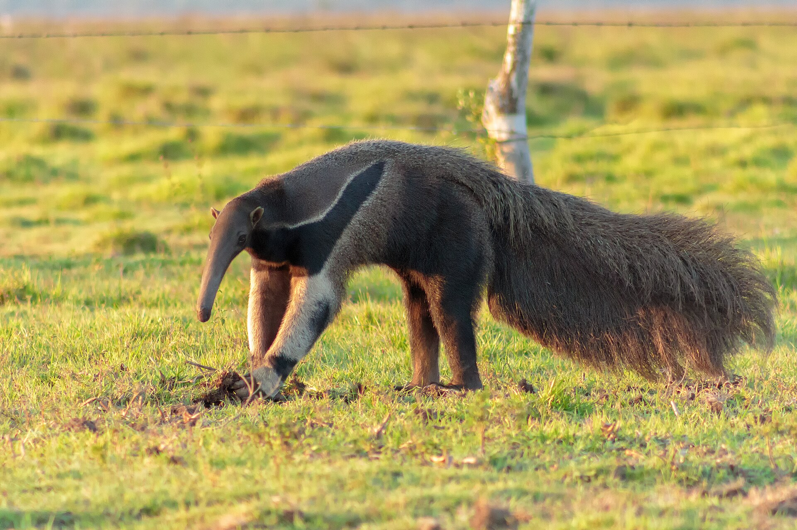
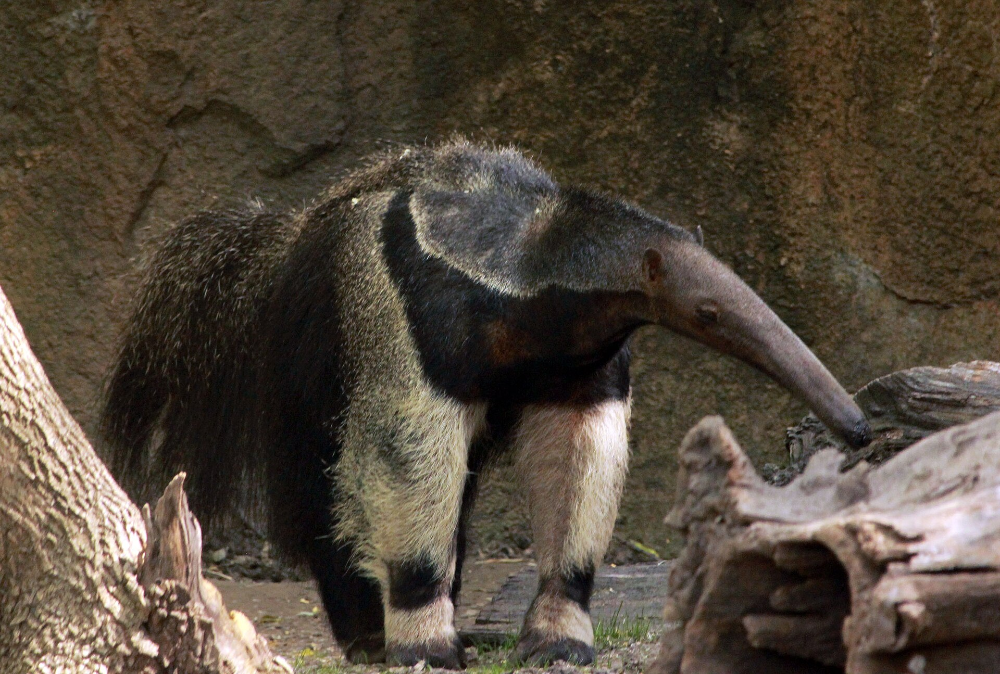
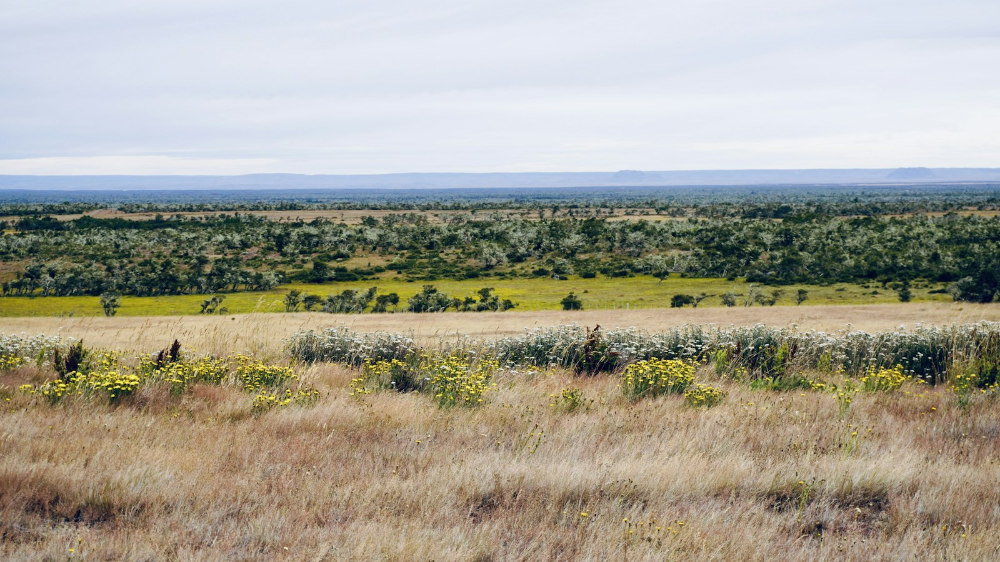

Amazon Field Guide · Wildlife No. 07
Giant Anteater: Living Vacuum of the Grassland Edge
Snout like a pool cue, tongue like sticky lightning, claws like garden forks—meet the insect specialist that vacuums up thirty thousand bugs a day and still needs cool forest shade to survive.

If you spotted a giant anteater at dusk, you might think someone had glued a hose to a shaggy rug and taught it to walk. The snout is absurdly long. The claws curl under like grappling hooks. The bushy tail streams behind like a feather duster. Then the animal pauses, sniffs the ground, and the real show begins: a tongue flicking so fast it blurs.
The giant anteater (Myrmecophaga tridactyla) is the star of this story—the biggest of the Amazon’s anteater clan. Adults can stretch about 2.2 metres from nose to tail tip and weigh up to 45 kilograms. They are myrmecophagous specialists: almost everything about their body is designed for eating ants and termites. The IUCN lists them as Vulnerable. They have already disappeared from places such as Guatemala, El Salvador, and Uruguay.
Cousins in the trees
Two smaller relatives share the wider Amazon neighbourhood. Tamanduas are mid-sized climbers (about 1.2 metres and 7 kilograms) that split time between ground and canopy. The tiny silky anteater weighs only about 400 grams and lives almost entirely in trees. It often hides in silk-cotton trees, where its fur matches the fluffy seed pods, and it raises young in a leaf-lined tree hole. Both are still listed as Least Concern, but numbers are slipping in many areas. The giant is the headline act—and the one under the most pressure.
“A giant anteater may visit around 200 nests in a day—but stays only about 40 seconds at each, so the colony can rebuild.”
A walker who needs two worlds
Giants roam what scientists call a thermal mosaic: patches of grassland and wetland for foraging, plus shady forest for cooling down. Their body temperature control is weak, so shade is not a luxury—it is survival gear. GPS trackers show animals in cleared landscapes travelling twice as far just to reach forest refuges. Mothers are mostly solitary, carrying a single cub on their backs for many months (sometimes approaching two years) while teaching the smell-maps of different ant colonies.
As they dig and wander, anteaters aerate soil, leave water holes that birds and frogs use in dry seasons, and move seeds stuck to their fur. They are living pest control for forests and farms alike—until roads, fire, and soy fields cut their mosaic into deadly scraps.
How a giant anteater meal works
- Follow the invisible map. A sense of smell roughly 40 times sharper than ours picks up ant and termite trails through soil and bark.
- Crack the fortress. Foreclaws about 12 centimetres long slice into rock-hard termite mounds like living crowbars.
- Flick the sticky hose. A tongue up to 60 centimetres long, coated in gluey saliva and tiny backward hooks, flicks about 150 times a minute.
- Leave before the army arrives. Roughly 30,000 insects a day come from many short visits—about 40 seconds per nest—so soldier ants never fully mobilise and colonies survive to feed tomorrow.
Five things that make a giant anteater a survivor
- Knuckle-walking keeps those digging claws sharp instead of worn flat on the ground.
- A tube-like snout and huge tongue turn ant colonies into fast-food outlets.
- Thermal shuttling between open forage grounds and cool forest shade manages a poorly insulated body.
- A defensive “tripod” stance—rearing on hind legs and tail—lets claws slash hard enough to discourage jaguars.
- Cub-on-back schooling passes down the chemical “menus” of safe and risky insect nests.

Trouble ahead—and reasons to hope
Roads are a quiet killer. On just four highways in Brazil’s Mato Grosso do Sul, researchers counted about 725 giant anteater deaths in a year. That kind of roadkill can cut population growth roughly in half. Dense fur also makes them “walking tinderboxes” in wildfires; the 2020 Pantanal fires killed millions of animals and left many orphaned cubs needing rescue. Soy and cattle strip away the shady forest patches giants need when temperatures climb. Pesticides poison ant colonies and build up in anteater bodies. When forest cover falls below about 30 percent, some animals cannot keep cool enough to feed properly and starve.
People are fighting back. Brazil’s Anteaters and Highways Project has GPS-collared over 100 individuals and built wildlife crossings that cut roadkill by about 60 percent in pilot zones. The Orphans of Fire effort has rehabilitated dozens of fire-orphaned cubs, with strong survival after release. In Argentina’s Iberá wetlands, a rewilding programme has released more than a hundred giants—animals that have even crossed back into southern Brazil, reversing a local extinction that lasted about 130 years.
Protecting the giant anteater means keeping both open foraging grounds and cool forest refuges connected. Do that, and you also keep one of Earth’s most efficient natural pest-control systems on the job—no pesticide bill required.

Odd facts
Word bank
- Myrmecophagous
- — specialised for eating ants and termites.
- Thermal mosaic
- — a mix of sunny open habitats and cool shady patches an animal moves between to manage body heat.
- Vulnerable
- — an IUCN category meaning a species faces a high risk of extinction if threats continue.
- Arboreal
- — living mainly in trees (like the silky anteater).
- Roadkill
- — animals killed by vehicles on roads.
- Rewilding
- — returning a species to places where it disappeared, and helping habitats recover.